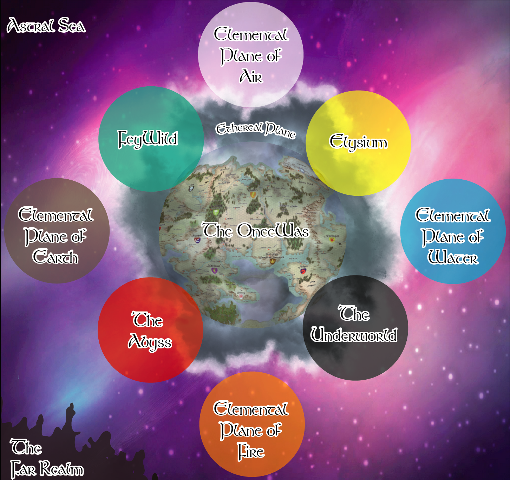

33 Planes of Existence

The OnceWas
The OnceWas is the Material Plane or “the real world” and where most of the adventures take place.
Siduri, goddess of beer and wine and Enlil, god of war, both spend time in the OnceWas, when not in Elysium.
Ethereal Plane
The Ethereal Plane is the Plane of Spirits. It is a shadowy, mist-shrouded replica of the real world that invisibly overlays the OnceWas. Certain mortals are blessed or cursed with psychic sensitivity and sometimes catch glimpses into this grey realm.
Twisted remnants of mortal souls comprise the vast majority of the Ethereal Plane’s inhabitants. These souls remain tethered by profound emotional distress and cannot proceed to the Underworld. The longer these souls remain, the more their memories and personalities are lost.
Creatures on the Ethereal Plane cannot attack creatures on the Material Plane, and vice versa. Sometimes, these souls manifest as incorporeal undead in the real world in the form of ghosts, shadows, wraiths and spectres.
Nanna - Sin, goddess of the moon and Queen of Ravens, is known to spend time in the Ethereal when not in Elysium or in the OnceWas.
Astral Sea
The Astral Sea is the plane of thought, memory, and psychic energy; it is where gods go when they die or are forgotten (or, most likely, both). It is a barren place with only rare bits of solid matter.
Most think the Astral Plane’s an empty place, serving as nothing but a cosmic highway connecting all the other places in the multiverse. Canny planewalkers know differently, though. It is the backdrop of the multiverse, where phenomena such as space and time are so vastly different form ” normal” that only a true blood knows the way around.
There are ”conduits” - the whirling connections that crisscross the endless starry field of the Astral Sea. They are portals into other worlds. These are used to travel around the Astral.
Oghma, god of knowledge and magic and King of Books, is known to spend time in the Astral Sea when not in Elysium or in the OnceWas.
Elemental Plane of Air
The Plane of Air is the home for air elementals, and djinni. Even great flocks of birds, and large beasts like rocs, have made their home on this plane, flying and soaring from air current to air current. It is filled with endless blue skies, and castles floating on clouds. This plane is the most hospitable of the Elemental Planes and tourists and travelers flock to these airs to take in the view and trade with the djinni.
Many inexperienced travels can get turned around on this plane, falling forever until they eventually slam into something or die from starvation, but those that know how the plane works can easily make a life here.
Marduk, god of wind, thunder and storms, slayer of monsters, is known to spend time on the Elemental Plane of Air when not in Elysium or in the OnceWas.
Elemental Plane of Water
The Elemental Plane of Water is a sea without a floor or a surface, an entirely fluid environment lit by a diffuse glow. It is one of the more hospitable of the Inner Planes once a traveler gets past the problem of breathing the local medium. The eternal oceans of this plane vary between ice cold and boiling hot, between saline and fresh. They are perpetually in motion, wracked by currents and tides. The plane’s permanent settlements form around bits of flotsam and jetsam suspended within this endless liquid. Even these settlements drift on the tides of the Elemental Plane of Water.
The Plane of Water is home to water elementals, water-breathing outsiders, and creatures from other planes that can survive in its watery seas. Fish, crustaceans, cephalopods and most sea-dwellers live on this plane.
Enki, god of water, the oceans and rivers, is known to spend time on the Elemental Plane of Water when not in Elysium or in the OnceWas.
Elemental Plane of Fire
The Plane of Fire is the home for fire elementals, and Efreeti. The Plane is an endless badland of broken, burning land and reddish, iron-like rock,[1] flaming distant mountains, and a burning orange-and-red horizon. There are tornadoes of flame tearing through the landscape, and jutting bits of glass-like rock poking from beneath the ground causing beautiful, dangerous, jagged gardens of melted sand. Black clouds of smoke and ash rise from multiple volcanoes, carrying a sulfuric and ionized scent. The temperature is extremely hot.
Creatures alien to the fire elemental climate, averaging between 110°F to 120°F, suffer progressive exhaustion.
Brigit, goddess of fire, is known to spend time on the Elemental Plane of Fire (particularly in the City of Brass) when not in Elysium or in the OnceWas.
Elemental Plane of Earth
The Elemental Plane of Earth is a place of rock, soil, and stone. The unwary and unprepared traveler may find himself entombed within this vast solidity of material and have his life crushed into nothingness, his powdered remains a warning to any foolish enough to follow.
Despite its solid, unyielding nature, the Elemental Plane of Earth is varied in its consistency, ranging from relatively soft soil to veins of heavier and more valuable metal. Striations of granite, volcanic rock, and marble interweave with brittle crystal and soft, crumbling chalks and sandstones. Thin veins of gemstones, rough and huge, can be found within the plane, and these unpolished jewels often lead the greedy to this plane in the hopes of picking them up with minimal effort. Such prospectors often meet their match in, who feel extremely attached (sometimes literally) to parts of their home.
Goibhnie, god of hard work and of the earth, is known to spend time on the Elemental Plane of Earth when not in Elysium or in the OnceWas.
FeyWild
The Feywild is the Plane of Faeries and it intersects with the OnceWas. The FeyWild is an echo of the real world but suffused with potent magic and unrestrained emotions. As an echo of OnceWas, its geography is similar although not entirely identical. Thelandscape is markedly more dramatic and beautiful with more trees and flowers. The mountains stand straighter and sharper. The rivers flow clearer and faster, the flowers bloom brighter and more fragrantly, and the weather manifests in supernatural ways.
Time does not flow the same in the Feywild as it does in the OnceWas. While any visitor would experience time flowing as normal, it is often the case that more time was passing in the real world, sometimes on the order of weeks, months, or years longer than expected.
More concerning, leaving the Feywild can have dire consequences. Lost time could suddenly “catch up” to a mortal, sending them into fits of exhaustion or hunger, or even killing them instantly if many years had passed. Often, memories of time spent in the Feywild become hazy and dreamlike, if not vanishing altogether.
It is said to b goddess of life and naturee the place from where the first elves originated.
Ki, of life and nature and Queen of faeries, is known to spend time in the FeyWild when not in Elysium or in the OnceWas.
The Underworld
The Underworld is the Plane of the Dead and it intersects with the OnceWas. It is a distinct realm where an individual’s soul goes after death (unless ensnared in the Ethereal Plane or selected to reside in Elysium). These souls are indiscriminately grouped together and lead a shadowy post-existence in a dark realm where the sun does not shine.
Nergal, god of death is the King of the Underworld. He spends most of his time here but on rare occations can be found in Elysium.
Raise dead and resurrection spells pluck the soul back from the Underworld but all memories of time spent there are lost.
The Abyss
The Abyss is a Plane of Demons. Decay, corruption, and entropy are all that await visitors to this plane of chaos and evil. The Abyss intersects with the OnceWas but magical barriers prevent cross over unless black magic is used and arcane gates are opened.
Grund-Wyren, mother of monsters, sometimes spends time in the Abyss when not in the OnceWas or in Elysium.
Elysium
Elysiun, also referred to as the Plane of the gods, is a utopian afterlife reserved for especially distinguished individuals. It is a place of great luxury and beauty. Elysium intersects with OnceWas but is invisible to mortals. The Twelve gods all spend time here and each has a mansion in Elysium.
Anu, god of the sun, heavens and of the sky, spends most of his time in Elysium.
The Far Realm
The Far Realm, also called the Outside, is a plane of abstraction and madness. Little is known about the realm and what is known is enough to make most go insane.
The entities that reside there are so foreign and strange that the gods are said to fear it and it’s inhabitants.
Aberrations such as mind flayers and beholders are either from this plane or shaped by its strange influence. The entities that abide in the Far Realm itself are too alien for a normal mind to accept without strain.
Unfortunately, it was Zagig and the Alliance of Magic-Users using the GodTrap to imprison the necromancer Iuz in the year 350 AoM that weakened the gates.
Now, breaches appear and aberrants can find their way in to wreak havoc and pull more of the Far Realm into OnceWas.
Worse yet, the chaotic Iuz seems to have flourished like A bad seed planted in a horrific garden.